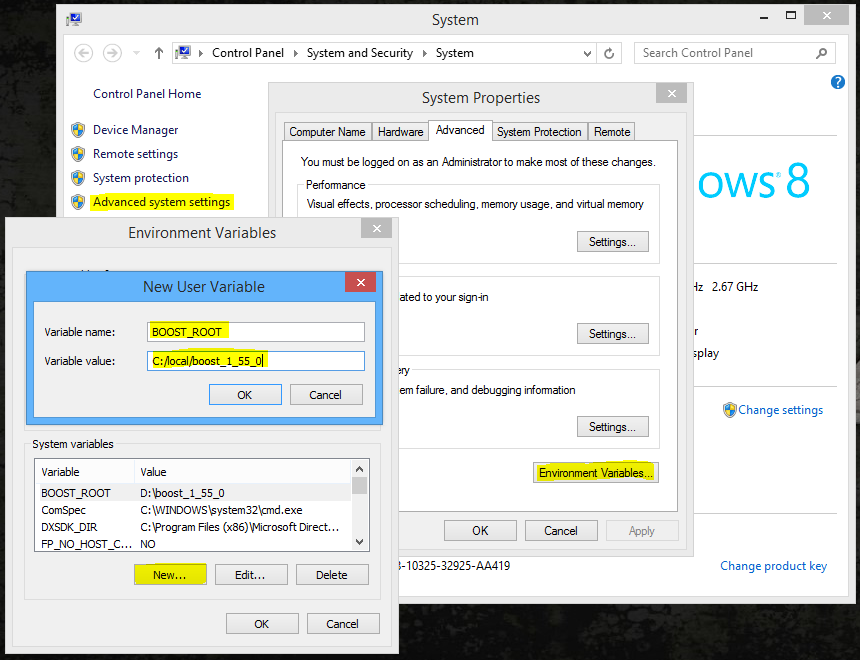

Platform: Linux, Windows ≥ 7 SP1 or Mac
The following are the various software needed to compile the core successfully. Most are cross-platform.
Processor with SSE2 support
Boost ≥ 1.49 (≥ 1.54 iff build with Clang)
MySQL ≥ 5.1.0
OpenSSL ≥ 1.0.0
CMake ≥ 2.8.12 (Windows) | ≥ 2.8.9 (Linux)
ZeroMQ ≥ 3.2.4 (Windows) | ≥ 2.2.6 (Linux) (4.3.4 and 6.x branches only)
GCC ≥ 4.7.2 or Clang ≥ 3.3 (Linux)
MS Visual Studio (Express) ≥ 12 (2013) Desktop (Windows)
Below you will find general install guidelines for each supported platform. Please note that for command-based OSes, the syntax may vary depending on the versions.
Debian based linux
sudo apt-get install build-essential autoconf libtool gcc g++ make cmake git-core sudo apt-get install wget p7zip-full libncurses5-dev sudo apt-get install openssl libssl-dev mysql-server mysql-client libmysqlclient15-dev sudo apt-get install libmysql++-dev libreadline6-dev zlib1g-dev libbz2-dev sudo apt-get install libboost-dev libboost-thread-dev libboost-system-dev libboost-filesystem-dev libboost-program-options-dev # for 4.3.4 and 6.x branches ONLY sudo apt-get install libzmq-dev
RedHat-based linux
yum groupinstall "Development Tools" yum groupinstall "Additional Development" yum install gcc-g++ git-core wget links zip unzip unrar cmake yum install mysql-server mysql-client mysql-devel yum install openssl
If you are compiling for 4.3.4 or 6.x you will also need to make and install zeromq from source:
wget http://download.zeromq.org/zeromq-4.0.5.tar.gz tar xzvf zeromq-4.0.5.tar.gz cd zeromq-4.0.5 ./configure make make install
Windows
- GitExtensions
- Includes Git, MySYSGit, and KDiff - be sure to install all three
- View this thread for important details on how to install Git for best results. Default install options for KDiff and MySYSGit are acceptable.
- During Git installation - Adjusting your PATH environment. Pick "Run Git from the Windows Command Prompt".
- During Git installation - Adjusting your PATH environment. Pick "Run Git from the Windows Command Prompt".
- Install the compiler Visual C++ 2013 Express
- MySQL Server Community Edition (Use the most recent 5.5.x version)
- Download the Windows MSI Installer.
- Scroll down to the bottom and click on "No thanks, just take me to the downloads!"
- When the install is almost done, make sure "Launch the MySQL Instance Configuration Wizard" is checked, then click "Finish".
- When the MySQL Instance Configuration Wizard launches, most default options are fine, but remember the username and password you use (root // whatever). You will need them to log into your chosen database management tool (below) in order to import SQL files later.
To test if MySQL is set up correctly, hit CTRL+ALT+DEL on your keyboard, enter the Task Manager, and select the "Services" tab. In the list of services you should see "MySQL" with a status of "Running".
Choose one of these database management tools:
mysql cli (Fastest (recomended since we use some very big files))
HeidiSQL (Best for beginners)
MySQL Workbench (already installed if you chose to install full MySQL package)
Try connecting your MySQL instance that you installed above. Depending on the program, you may be looking for "Connect to Host" or "New Connection" or "Session Manager".
Create a new connection/session. The Hostname/IP address of "127.0.0.1" or "localhost" is fine if you installed MySQL on the same computer that you installed HeidiSQL or SQLYog. Simply fill in your root // whatever password and you should now be able to connect to your database.NET Framework 3.5 or above (you should already have it via your Windows updates)
- Boost
- Download the prebuilt Windows Binary matching your platform
- Install the package to the default location.
- Add an environment variable to "system" variables named "BOOST_ROOT" pointing to your Boost installation directory, e.g "C:\local\boost_1_55_0".
 - Restart Cmake if it was already running
- Note: If CMake errors about Boost, install both Boost 32 and 64 bits version to the same directory (e.g "C:\local\boost_1_55_0").
- CMake
- Download and install the win32-x86.exe file
- CMake 3.0.0: if it does not recognize the Visual C++ compiler location, use CMake 2.8.x.
- “Visual Studio 12” is Microsoft Visual Studio 2013, or Visual C++ 12.0, or MSC 18.0 (confusing, right?) If I need to build for 64-bit, then I choose “Visual Studio 12 Win64”;
- MySQL development files
- These files are shipped with MySQL Server but to make it easier we packed the libs and include files for both 32 bits and 64 bits.
- Extract the files to a known location, e.g,
C:/mysql_libs
- OpenSSL- Download the 32bit version. Or you can get both if you plan to compile both 32 and 64bit, they can coexist side by side.
- Find the 32bit version by finding the latest Win32 OpenSSL that is NOT the "light" version.
- Example: Win32 OpenSSL v1.0.1i
- Find the 64bit version by finding the latest Win64 OpenSSL that is NOT the "light" version.
- Example: Win64 OpenSSL v1.0.1i
- Note #1: If you get a "Missing Microsoft Visual C++ 2008 Redistributables" error message while installing OpenSSL, download the Microsoft Visual C++ 2008 Redistributable Package (x86) (1.7MB Installer) and install it.
If you need 64bit support, download and install the Microsoft Visual C++ 2008 Redistributable Package (x64). Both these are linked from http://slproweb.com/products/Win32OpenSSL.html as well. - Note #2: While installing OpenSSL, choose The OpenSSL binaries (/bin) directory (NOT "The Windows system directory") when given the choice on where to copy the OpenSSL DLLs. These DLLs will need to be located easily for Compiling the Source.
- Find the 32bit version by finding the latest Win32 OpenSSL that is NOT the "light" version.
- ZeroMQ
(Optional)
- If you use different PCs to compile/run Trinity, install one of the following packages on your Server-PC to avoid missing dependencies (depending on your Visual Studio Version and your Server-PC Operating System)
- Microsoft Visual C++ 2013 Redistributable Package
- NOTE: Whatever you do you CAN'T run TrinityCore on Windows XP or Windows 2003.
- TortoiseGit
- This instruction supports Git Extensions only, but TortoiseGit is another viable option if you're comfortable with the process.
MacOSX
Xcode: Available in the App Store. After install run "xcodeselect --install" from terminal to install the required command line tools.
MySQL Community Server: http://dev.mysql.com/downloads/mysql -> "Mac OS X 10.9 (x86, 64-bit), DMG Archive"
GNU Readline: ftp://ftp.cwru.edu/pub/bash/readline-6.3.tar.gz
OpenSSL: http://www.openssl.org/source/openssl-1.0.1j.tar.gz
CMake: http://www.cmake.org/files/v3.0/cmake-3.0.2.tar.gz
Boost: http://sourceforge.net/projects/boost/files/boost/1.56.0/boost_1_56_0.tar.gz
{kind=link}
{kind=link}